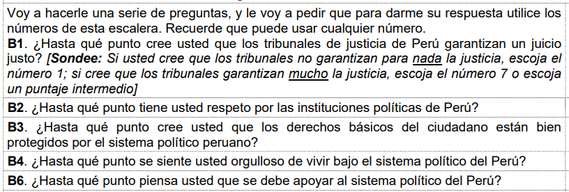
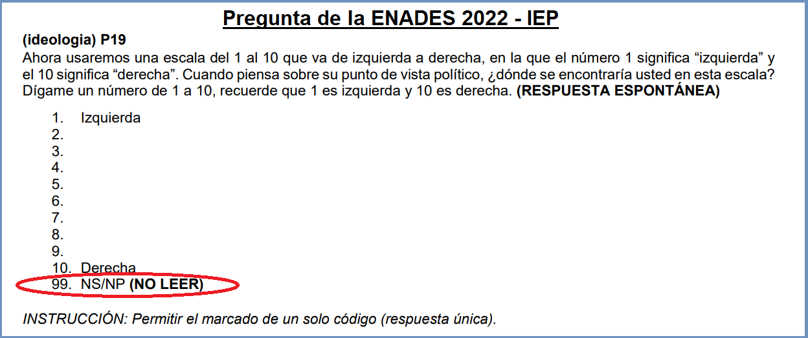

Al finalizar esta sesión, el alumno deberá comprender los fundamentos teóricos de las pruebas de hipótesis dentro del marco de la estadística inferencial, enfocándose particularmente en el entendimiento y la aplicación de la prueba T para medias y para proporciones.
6.2 Presentación
6.3 ¿Qué son las pruebas de hipótesis?
Una prueba de hipótesis es un método para determinar si una afirmación sobre una población es verdadera o falsa, basándose en la información obtenida de una muestra aleatoria de la población.
Este enfoque proporciona una forma sistemática y rigurosa para tomar decisiones informadas y hacer inferencias sobre la población en función de la evidencia empírica.
6.3.1 Hipótesis
Las hipótesis son suposiciones que hacemos sobre un parámetro de una población y que queremos verificar a través de datos muestrales. Principalmente se manejan dos tipos de hipótesis:
Hipótesis Nula (H0): Asume que no hay diferencia significativa o efecto en los datos. Por ejemplo, podría afirmar que la media de una población es igual en dos grupos.
Hipótesis Alternativa (H1 o Ha): Es la que se considera si los datos sugieren que la hipótesis nula puede ser falsa. Propone una diferencia o efecto significativo. Por ejemplo, podría afirmar que la media es diferente en dos grupos.
El objetivo de una prueba de hipótesis es determinar si los datos muestrales proporcionan suficiente evidencia para rechazar la hipótesis nula a favor de la hipótesis alternativa.
6.3.2 Estadísticos de prueba
Es como una fórmula o herramienta matemática que usamos para comparar nuestros datos con lo que esperamos bajo la hipótesis nula. Nos da un número que nos indica cuánto difieren nuestros datos de esa expectativa.
Los estadísticos de prueba en las pruebas de hipótesis utilizan diferentes tipos de insumos según el tipo de prueba y lo que se esté evaluando. Algunos de los insumos más comunes incluyen la media de la muestra, que es crucial en pruebas como el t-test, donde se comparan las medias de uno o más grupos.
La varianza y la desviación estándar de la muestra también son importantes, especialmente en pruebas como el F-test de ANOVA, que analiza las diferencias de varianzas entre grupos para determinar si las medias son significativamente diferentes. Otro insumo relevante es el tamaño de la muestra, que influye en la precisión del estadístico de prueba y en la capacidad de detectar diferencias o efectos reales.
6.3.3 Valor p de la prueba
Una vez que tenemos el resultado del test, calculamos el p-value. Este valor nos dice qué tan probable es obtener un resultado como el que obtuvimos (o más extremo) si la hipótesis nula fuera cierta. Un p-value pequeño sugiere que nuestros datos son raros bajo la hipótesis nula.
6.3.4 Informar los resultados
Tenemos los siguientes escenarios
Resultado
Decisión
\(p-value <\alpha\)
Rechazamos la hipótesis nula.
\(p-value >=\alpha\)
No rechazamos la hipótesis nula.
Considerar lo siguiente:
La convención tradicional es considerar un resultado como estadísticamente significativo si el p-valor es menor que 0.05 (es decir, p<0.05). Es esencial recordar que el umbral de 0.05 es una convención y, dependiendo del contexto o la disciplina, se pueden usar otros valores de α.
Cuando el p-valor es menor que 0.05 (o cualquier otro nivel de significancia que hayas establecido), es correcto decir que “rechazamos la hipótesis nula”. Sin embargo, es importante ser cauteloso con la terminología que usamos después de eso. No es correcto decir que “aceptamos la hipótesis alternativa”. La razón es que las pruebas de hipótesis no están diseñadas para probar directamente la hipótesis alternativa, sino para evaluar la evidencia contra la hipótesis nula. En su lugar, es más adecuado y preciso decir que “tenemos suficiente evidencia para respaldar la hipótesis alternativa”, que los datos “son consistentes con la hipótesis alternativa” o que encontramos pruebas “estadísticamente significativas”.
6.4 Prueba T de Student
La prueba t, o test t de Student, es un tipo de análisis estadístico utilizado para determinar si hay diferencias significativas entre las medias de dos grupos.
El test t de Student se basa en la suposición de que las muestras provienen de una distribución normal, y calcula las diferencias en términos de la media y la variabilidad de las muestras.
El resultado del test t indica si las diferencias observadas son lo suficientemente grandes como para considerarlas estadísticamente significativas, ayudando así a decidir si se debe rechazar la hipótesis nula de que no hay diferencia entre los grupos comparados.
Ejercicio 1
Pregunta de investigación
Para iniciar, debemos tener claro nuestra pregunta que deseamos responder.
Utilizando ENADES, deseamos responder a la siguiente interrogante: ¿El monto mínimo promedio necesario para que un hogar pueda subsistir (p08) será diferente entre el área urbana y rural (area2) a nivel poblacional?
Paso 1: Análisis exploratorio de datos
No está en el flujograma, pero siempre debes seguir algunos pasos previos.
Desde lo más general a lo más específico, nosotros debemos:
Abrir la base de datos. Vamos a seguir usando ENADES. Puedes ver el cuestionario aqui:
library(haven)library(tidyverse)
── Attaching core tidyverse packages ──────────────────────── tidyverse 2.0.0 ──
✔ dplyr 1.1.4 ✔ readr 2.1.5
✔ forcats 1.0.0 ✔ stringr 1.5.1
✔ ggplot2 3.5.1 ✔ tibble 3.2.1
✔ lubridate 1.9.3 ✔ tidyr 1.3.1
✔ purrr 1.0.2
── Conflicts ────────────────────────────────────────── tidyverse_conflicts() ──
✖ dplyr::filter() masks stats::filter()
✖ dplyr::lag() masks stats::lag()
ℹ Use the conflicted package (<http://conflicted.r-lib.org/>) to force all conflicts to become errors
Esto nos ayuda a corroborar que tenemos toda la información necesitaria lista para llevar a cabo una prueba de hipótesis.
Paso 2: Realizar la prueba de hipótesis
Hipótesis
Lo primero que debemos plantear son las hipótesis nula y alternativa.
Recuerda que cada prueba tiene su hipótesis nula, por lo que hay que memorizar algunas de estas. En el caso de la Prueba T, las hipótesis son las siguientes:
Hipótesis
Descripción
Notación
Hipótesis nula
Las medias poblacionales son iguales
\(H_0: \mu_1 = \mu_2\)
Hipótesis alterna
Las medias poblacionales son diferentes
$H_1: _1 _2 $
Estas son las hipótesis que vamos a validar con nuestra prueba.
Asimismo, debemos recordar que estamos trabajando a un 95% de confianza, por lo que nuestro nivel de significancia será 0.05.
\[\alpha = 0.05\]
Calcular p-valor
Ahora utilizemos la función t.test() para realizar el cálculo del Estadístico T y el cálculo del p-valor.
t.test(p08 ~ area2, #Ese símbolo ~ (en Windows) es ALT + 126data = enades)
Welch Two Sample t-test
data: p08 by area2
t = 10.992, df = 466.14, p-value < 2.2e-16
alternative hypothesis: true difference in means between group Urbano and group Rural is not equal to 0
95 percent confidence interval:
815.0508 1169.9052
sample estimates:
mean in group Urbano mean in group Rural
2489.569 1497.091
El estadístico de prueba en este caso es el Estadítico T, el cual es 10.992.
Ahora bien, lo que hace la prueba es comparar este valor observable del Estadístico T con un valor teórico, de acuerdo a la distribución T. Dicha comparación lo que arroja es una probabilidad de obtener ese valor observado, en caso la hipótesis nula (medias iguales) es verdadera
En este caso, nuestro p-value es < 2.2e-16. El cual es un número muy pequeño.
Importante
El número 2.2e-16 es una forma abreviada de escribir un número muy pequeño en notación científica. En este caso, equivale a 0.00000000000000022 o 2.2 multiplicado por 10 elevado a la potencia -16. Es común utilizar esta notación en estadística y otras áreas de la ciencia para representar números muy grandes o muy pequeños de manera más concisa.
Paso 3: Informar los resultados
Tenemos los siguientes escenarios
Resultado
Decisión
\(p-value <\alpha\)
Rechazamos la hipótesis nula.
\(p-value >=\alpha\)
No rechazamos la hipótesis nula.
En nuestro caso nuestro habíamos escogido un \(\alpha = 0.05\) por lo que al obtener un p-valor de 2.2e-16 (0.00000000000000022) rechazamos la hipótesis nula de que nuestras medias poblacionales son iguales.
En otras palabras, un p-valor de 0.00000000000000022 significa que hay una probabilidad muy baja de obtener los resultados observados en la muestra si la hipótesis nula es verdadera.
En este punto tienes que recordar que estamos trabajando con probabilidades, no existen certezas absolutas, por lo tanto, nuestra interpretación final debe considerar ello.
Luego de realizar la Prueba T para diferencia de medias, dado que se obtuvo un p-valor (2.2e-16) que es menor que nuestro nivel de significancia establecido de 0.05, hay evidencia suficiente para rechazar la hipótesis nula. Por lo tanto, concluimos que existen diferencias estadísticamentes significativas en el monto mínimo promedio necesario para que un hogar pueda subsistir entre el área urbana y rural.
Ejercicio 2
Utilizando ENADES, deseamos saber si existe diferencia en el la posición ideológica que tiene el ciudadano dependiendo si este vive en el sector rural y urbano. Considera la variable p19 (ideología).
Realice una comparación de medias en ambos grupos utilizando la prueba de hipótesis más pertinente. Muestre sus resultados e interprete.
Ejercicio 3
Base de datos
El Proyecto de Opinión Pública de América Latina (LAPOP) es un proyecto de investigación multinacional especializando en el desarrollo, implementación y análisis de encuestas de opinión pública.
La encuesta mide los valores y comportamientos democráticos en el continente americano usando muestras probabilísticas nacionales de la población adulta en edad de votar.
Puede visualizar el cuestionario de la encuesta 2018 aqui
El presente estudio tiene como objetivo investigar si existe diferencia entre el nivel de aprobación del sistema político y la asistencia a manifestaciones.
Las manifestaciones públicas son eventos que reflejan la participación activa de la población en la expresión de demandas, opiniones o protestas sobre temas sociales, políticos o económicos.
Un investigador plantea la hipótesis de que existe no existe una diferencia significativa entre los niveles de aprobación del sistema político entre la población que va a manifestar y la que no.
Valide la hipótesis con la prueba más pertinente.
Utilice las variables para realizar un índice aditivo de aprobación del sistema político (debe tener una escala de 0-100):

Y la siguiente para determinar si una persona fue o no a una manifestación.
6.5 Recuerda!
6.5.1 Valores faltantes en las encuestas

En las encuestas, los valores perdidos son aquellos que faltan en las respuestas proporcionadas por los encuestados. Esto puede suceder porque el encuestado decidió no responder a la pregunta, porque no entendió la pregunta o porque la pregunta simplemente no se aplicaba a él o ella.
Para manejar los valores perdidos, a menudo se utiliza la técnica de imputación, que implica reemplazar los valores faltantes por algún valor estimado. En algunos casos, se puede asignar un valor específico, como 99 o 999, para indicar que el encuestado no sabe o no responde a la pregunta. Este enfoque se utiliza comúnmente en encuestas de opinión pública y otras encuestas que involucran preguntas sensibles.
Sin embargo, es importante tener en cuenta que asignar un valor específico a los valores perdidos puede afectar los resultados de la encuesta y la validez de los análisis estadísticos posteriores. Por lo tanto, es importante evaluar cuidadosamente las estrategias de manejo de valores perdidos y elegir la opción más adecuada para el conjunto de datos y el análisis específicos.